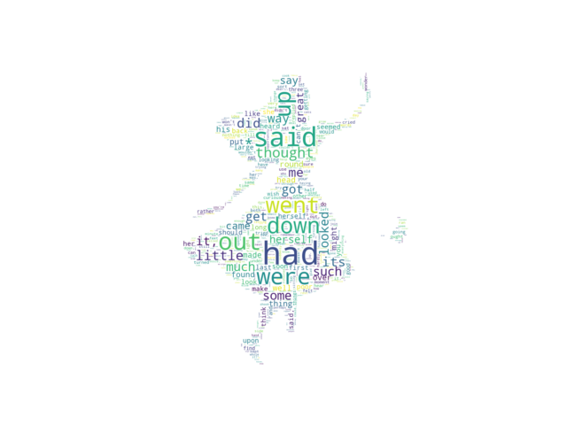

Note
Click here to download the full example code
Using frequency¶
Using a dictionary of word frequency.
import multidict as multidict
import numpy as np
import os
import re
from PIL import Image
from os import path
from wordcloud import WordCloud
import matplotlib.pyplot as plt
def getFrequencyDictForText(sentence):
fullTermsDict = multidict.MultiDict()
tmpDict = {}
# making dict for counting frequencies
for text in sentence.split(" "):
if re.match("a|the|an|the|to|in|for|of|or|by|with|is|on|that|be", text):
continue
val = tmpDict.get(text, 0)
tmpDict[text.lower()] = val + 1
for key in tmpDict:
fullTermsDict.add(key, tmpDict[key])
return fullTermsDict
def makeImage(text):
alice_mask = np.array(Image.open("alice_mask.png"))
wc = WordCloud(background_color="white", max_words=1000, mask=alice_mask)
# generate word cloud
wc.generate_from_frequencies(text)
# show
plt.imshow(wc, interpolation="bilinear")
plt.axis("off")
plt.show()
# get data directory (using getcwd() is needed to support running example in generated IPython notebook)
d = path.dirname(__file__) if "__file__" in locals() else os.getcwd()
text = open(path.join(d, 'alice.txt'), encoding='utf-8')
text = text.read()
makeImage(getFrequencyDictForText(text))
Total running time of the script: ( 0 minutes 4.469 seconds)